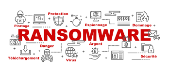
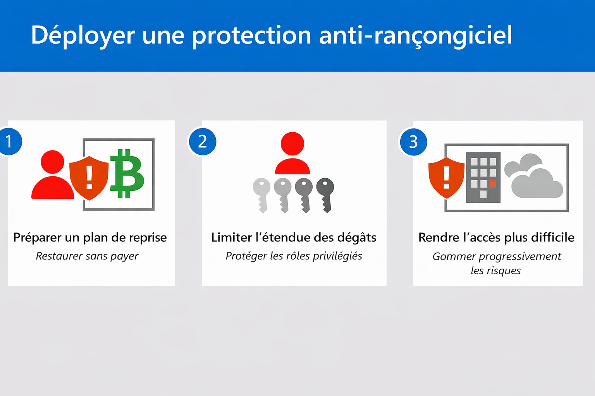

Veille Informatique L’évolution des ransomwares et les nouvelles stratégies de protection
Objectif
Dans le cadre du Bloc 1 – Support et mise à disposition de services informatiques, j’ai réalisé une veille informationnelle sur l’évolution des ransomwares. L’objectif était de comprendre leur fonctionnement, leur impact sur les entreprises et d’identifier les nouvelles stratégies de protection mises en place pour limiter les risques.
Évolution des ransomwares
Les ransomwares sont des logiciels malveillants qui chiffrent les données d’une organisation afin de demander une rançon en échange de la clé de déchiffrement. Au fil des années, ces attaques sont devenues plus sophistiquées et ciblent désormais principalement les entreprises, les hôpitaux ou les collectivités.
Aujourd’hui, certaines attaques combinent le chiffrement des données et le vol d’informations sensibles. Les cybercriminels menacent alors de publier les données si la rançon n’est pas payée. Cette méthode augmente la pression sur les victimes.
Image : Exemple d’écran de ransomware

Figure 1 – Illustration d’un poste infecté par un ransomware.
Impacts sur les organisations
Une attaque par ransomware peut entraîner l’arrêt complet du système d’information. Les services deviennent inaccessibles, les utilisateurs ne peuvent plus travailler et l’activité de l’entreprise est fortement perturbée.
Au-delà de la perte financière, ces attaques peuvent également nuire à l’image de l’organisation et poser des problèmes juridiques en cas de fuite de données personnelles.
Image : Schéma d’impact sur le système d’information
Figure 2 – Conséquences d’une attaque sur les services informatiques.
Nouvelles stratégies de protection
Pour se protéger contre les ransomwares, les entreprises adoptent plusieurs stratégies. La mise en place de sauvegardes régulières selon la règle 3-2-1-1-0 permet de restaurer les données en cas d’attaque. L’utilisation d’authentification multifacteur et la limitation des droits administrateurs réduisent également les risques.
La sensibilisation des utilisateurs est aussi essentielle, car de nombreuses attaques commencent par un simple email frauduleux. Enfin, la supervision et la mise à jour régulière des systèmes renforcent la sécurité globale.
Image : Exemple de stratégie de protection
Figure 3 – Principales mesures de prévention contre les ransomwares.
Bilan
Cette veille informatique m’a permis de comprendre que les ransomwares représentent une menace majeure pour les organisations. Leur évolution montre que la cybersécurité doit être une priorité permanente et non une action ponctuelle.
Conclusion
L’évolution des ransomwares impose aux entreprises d’adopter une stratégie de protection complète combinant sauvegardes, sécurisation des accès et sensibilisation des utilisateurs. Cette veille renforce l’importance du rôle du technicien informatique dans la prévention des incidents et la continuité de service.